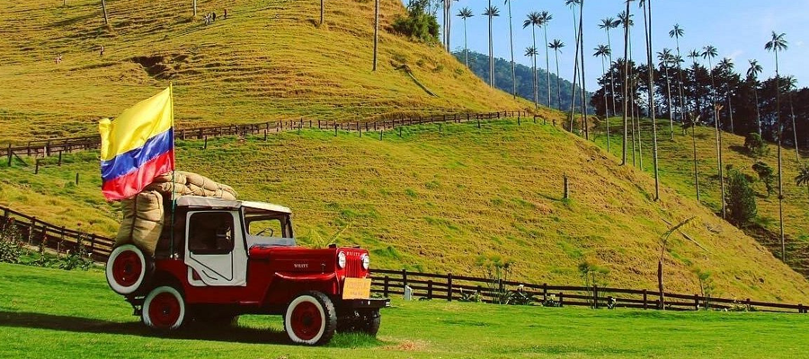
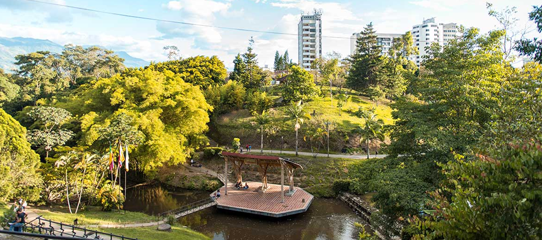
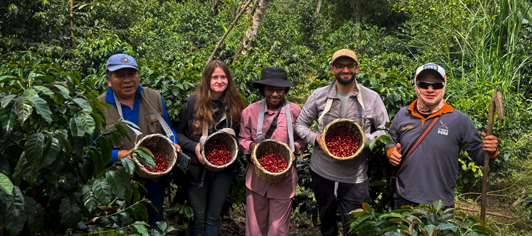
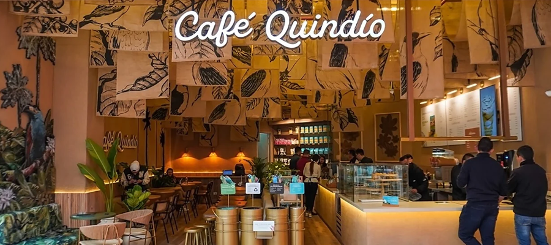

Lugares que no te puedes perder
En este buscador vas a poder filtar por nombre, tipo de establecimiento y por barrio
ver más
En este buscador vas a poder filtar por nombre, tipo de establecimiento y por barrio
ver más
El parque de la vida es un lugar agradable, lleno de naturaleza y espacios para conectarse en silencio con los animales.
ver mas
Si eres un gran amante del Cafe no te puedes perder la experiencia completa de la preparacion del cafe, desde la siembra hasta que lo bebes.
ver mas
Si quieres probar el autentico sabor del eje cafetero, debes visitar cafe quindio, el lugar perfecto para desyunar, almorzar y tardear.
ver mas